System Architecture Diagram
This diagram illustrates the automated flow from developer commit to multi-environment deployment using Jenkins, Docker Hub, and ArgoCD. The Test phase is automatically triggered upon the acceptance of a Pull Request from dev to release, while the Production phase is triggered when release is merged into main. Access is managed via local TCP services and port forwarding.
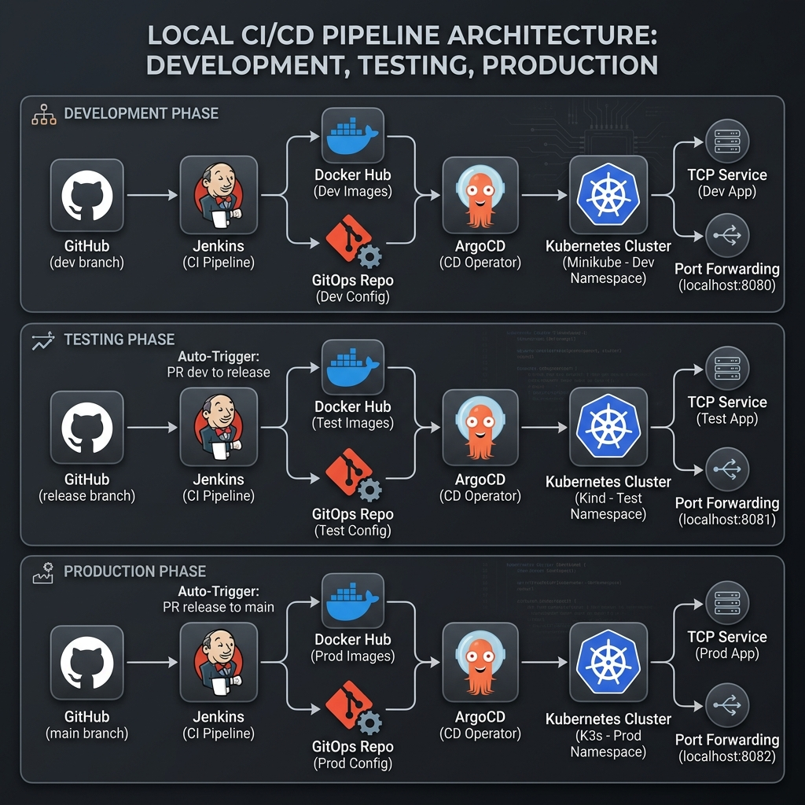
Phase 2 Visual Walkthrough
1. Development Push & Webhook
Developer pushes changes to the dev branch, triggering the Jenkins Dev Pipeline via GitHub Webhook.
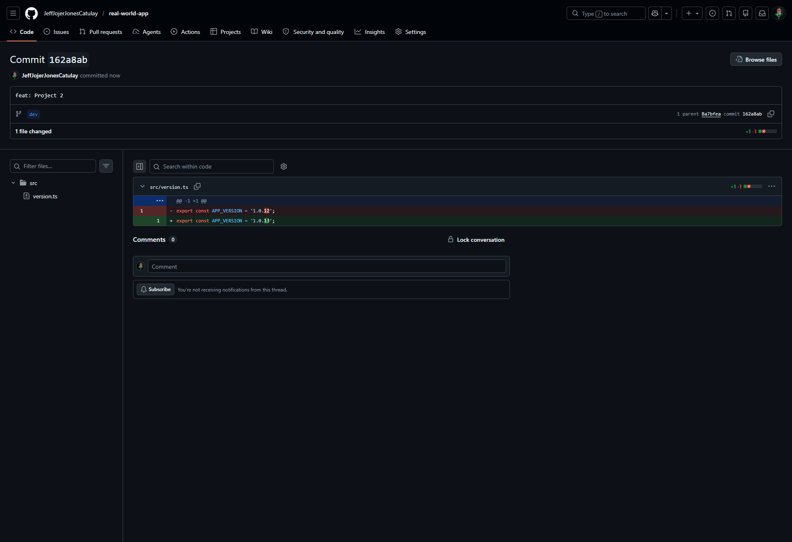
2. Jenkins Dev Pipeline Execution
The Jenkins pipeline automates the build process, including Docker image creation and Docker Hub push.
3. Docker Registry Synchronization
Verified image tags in the registry after a successful pipeline run.
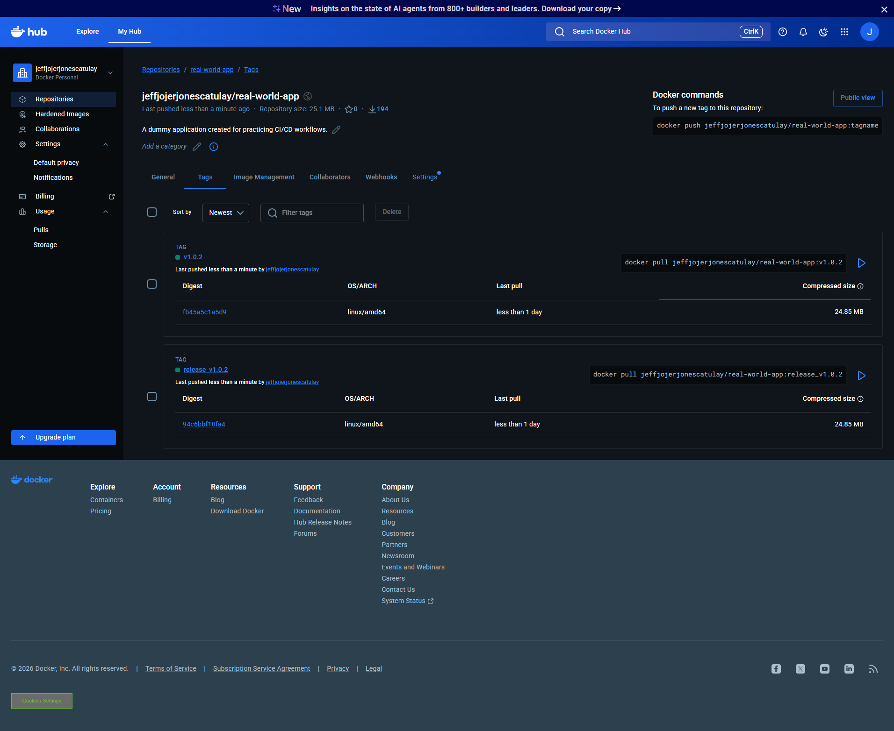
4. GitOps Manifest Update
Jenkins programmatically updates the image tag in the GitOps repository to trigger ArgoCD sync.
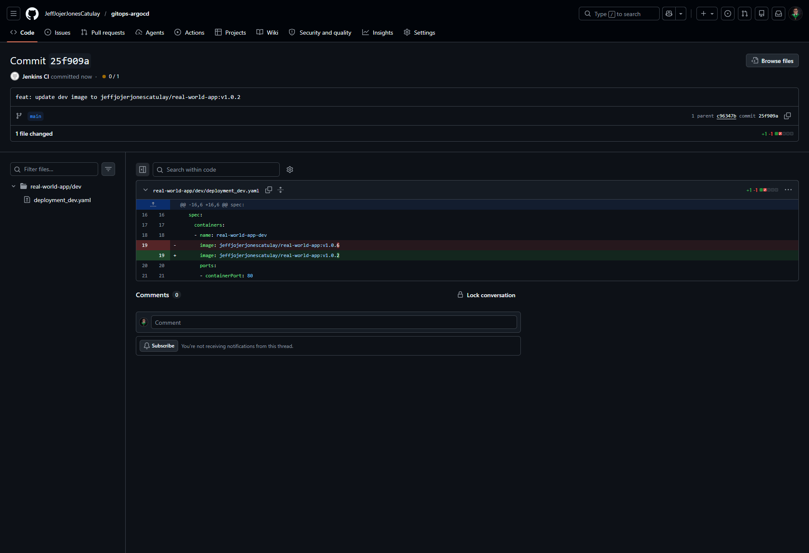
5. ArgoCD Dev Deployment
ArgoCD detects the change in the GitOps repo and synchronizes the Dev environment cluster state.
6. Pull Request: Dev to Release
Promotion to Testing Phase via a Pull Request. Once accepted, the Jenkins Release pipeline is automatically triggered to deploy the updated version to the Test environment.
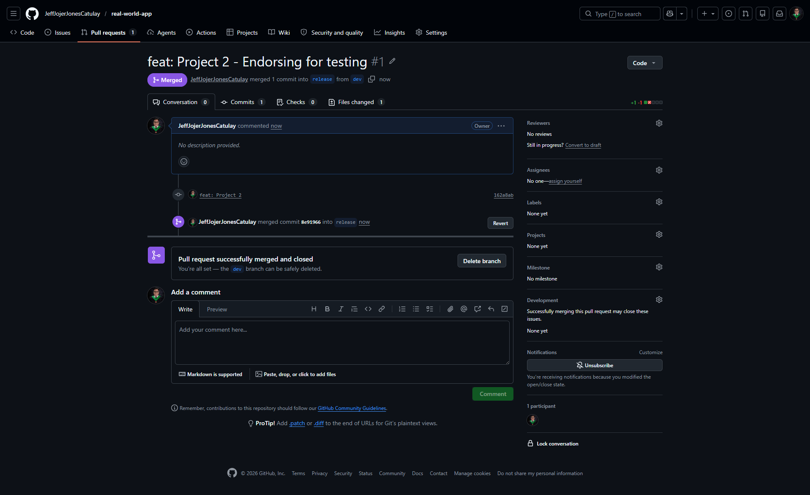
7. Jenkins Release Pipeline
The Release pipeline builds the production-ready image and updates the testing environment manifests.
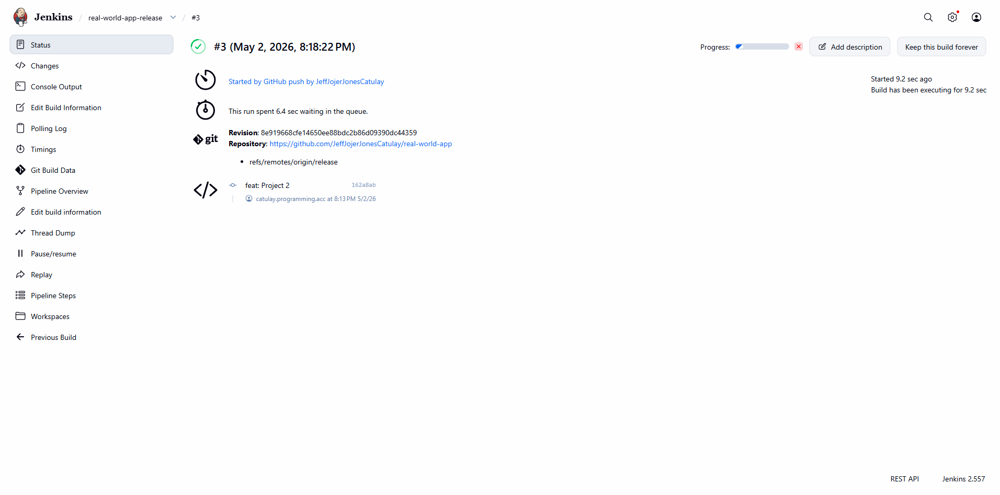
8. ArgoCD Release Deployment
Synchronization of the Test/Release environment in ArgoCD.
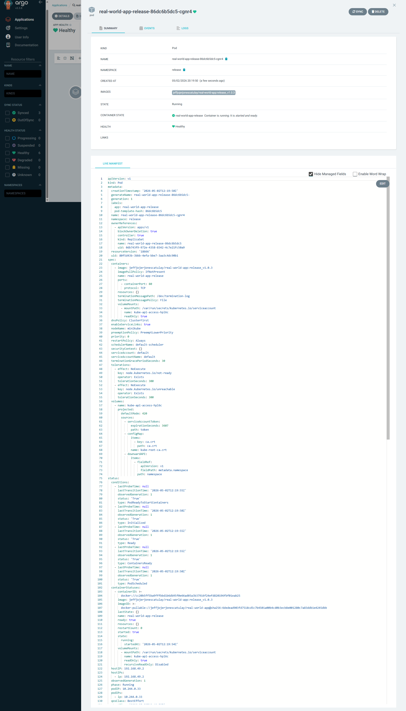
9. Final Promotion: Release to Main
The final deployment is triggered automatically when the Release PR is merged into Main, initiating the Prod pipeline to deploy the verified release tag.
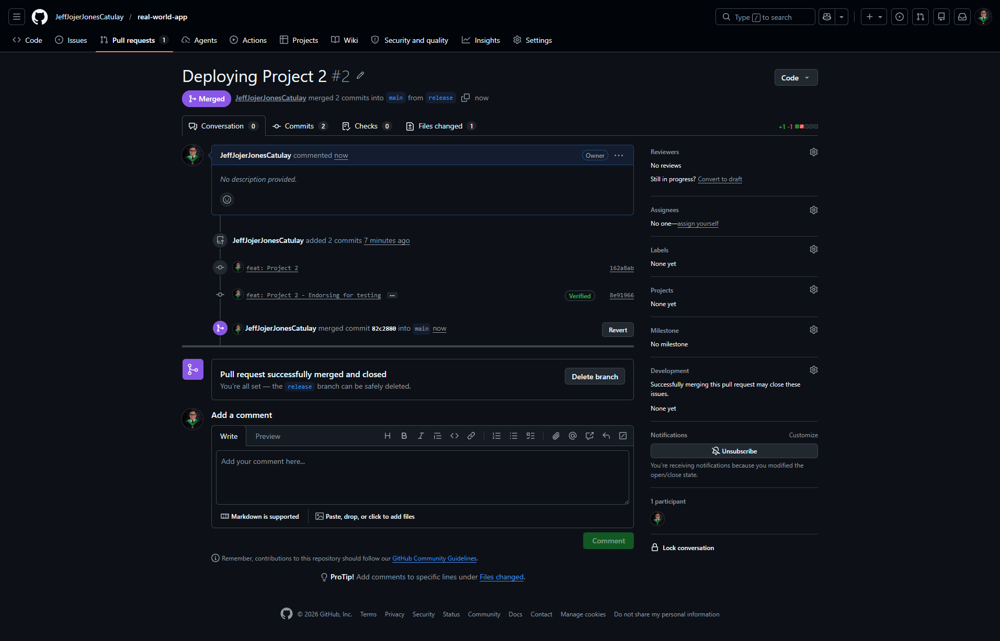
10. Production Sync
Production environment successfully synchronized and healthy in ArgoCD.
Additional Project Artifacts
Supplemental screenshots documenting the pipeline logs, version comparisons, and extended environment states.
Jenkins Production Pipeline Log
Detailed execution log for the final production deployment phase.
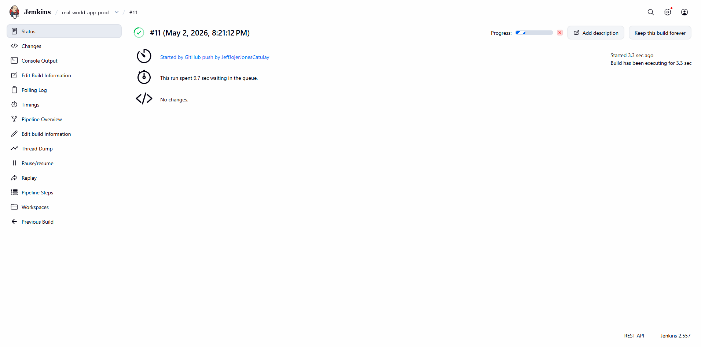
GitOps Production Manifest Update
The automated commit to the GitOps repository for the production environment.
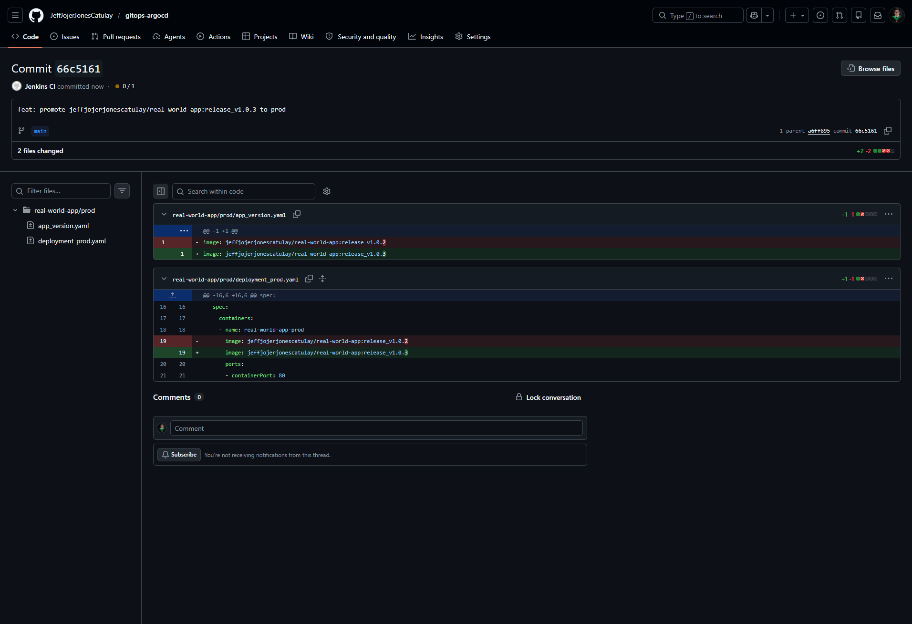
GitOps Release Manifest Update
The automated commit documenting the transition to the release environment.
Branch Comparison: Release to Main
Visualizing the diff between the release candidate and the production main branch.
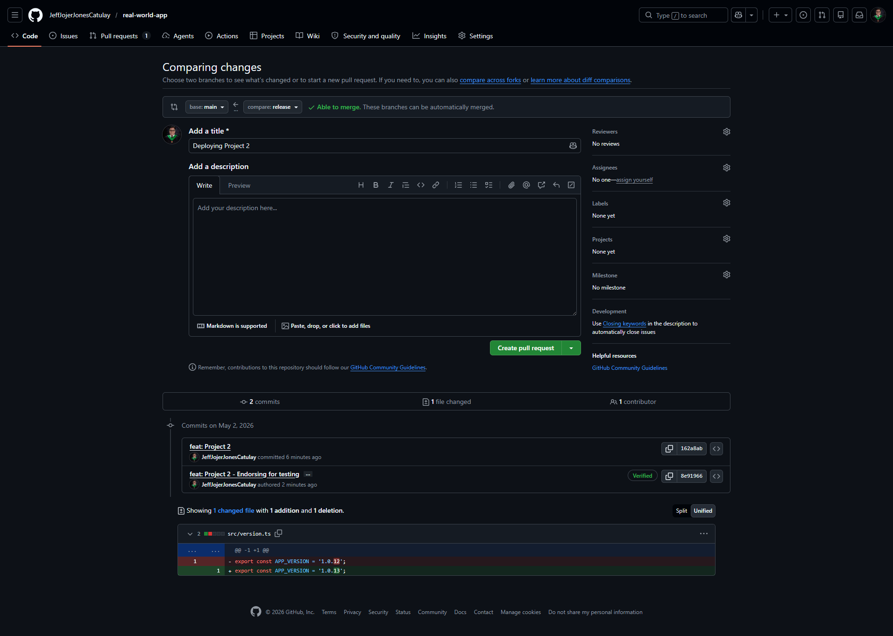
Branch Comparison: Dev to Release
Visualizing the diff between the development branch and the release target.
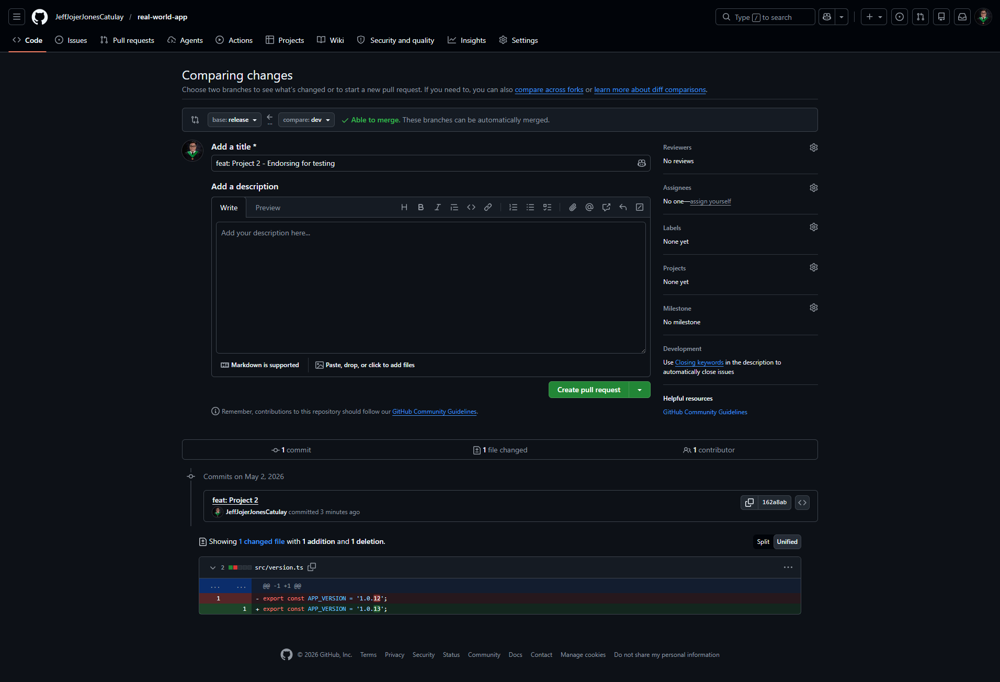
Docker Hub Version History
Overview of the container image tags generated throughout the project lifecycle.
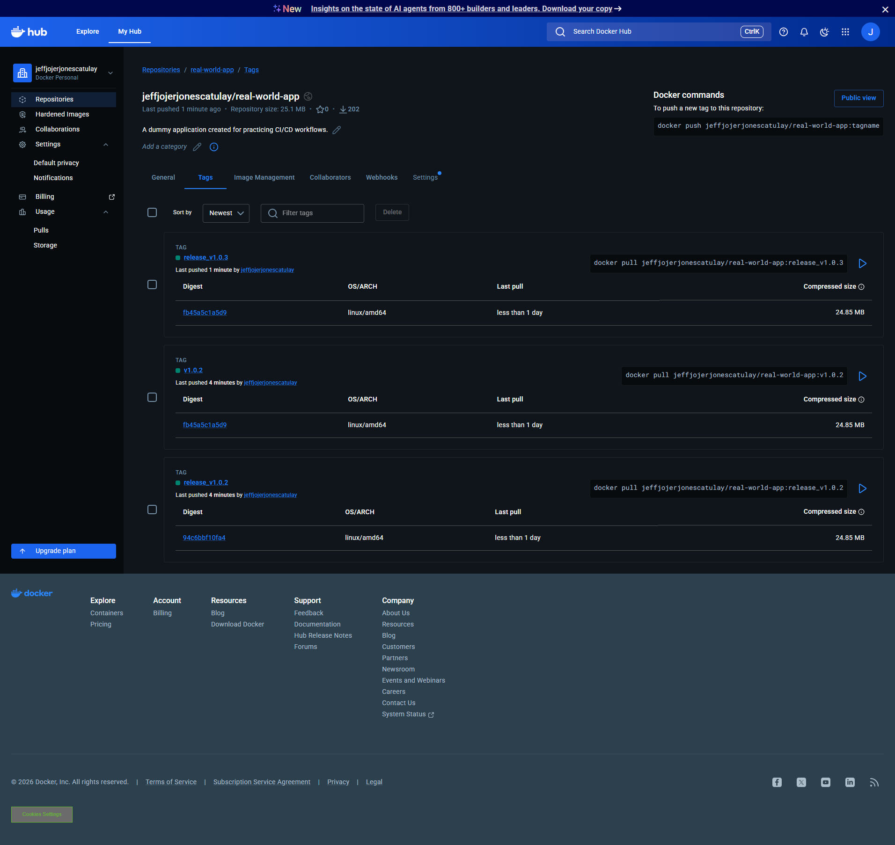
ArgoCD Detailed View: Release App
Detailed synchronization status for the release application.
ArgoCD Detailed View: Prod App
Detailed synchronization status for the production application.
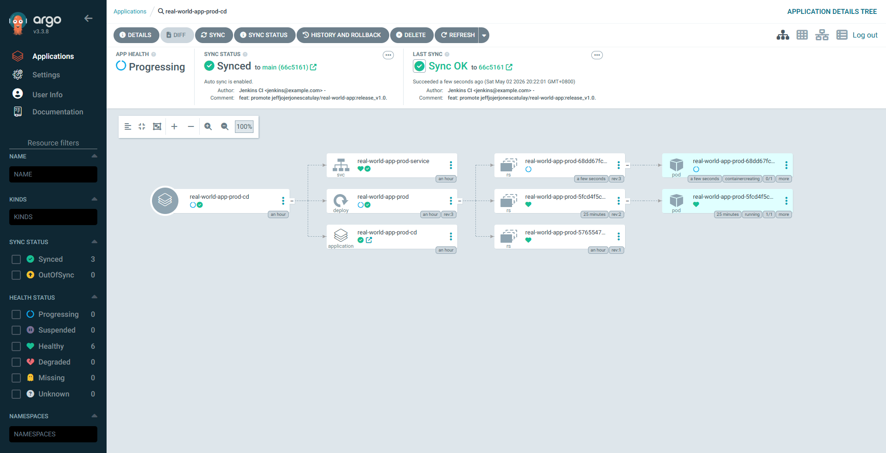
Real World App Interface
The live application sandbox environment, featuring a modern stack and automated deployment indicators.

Deployment Status Badge
Verification of the active CI/CD sandbox and version tracking within the application.